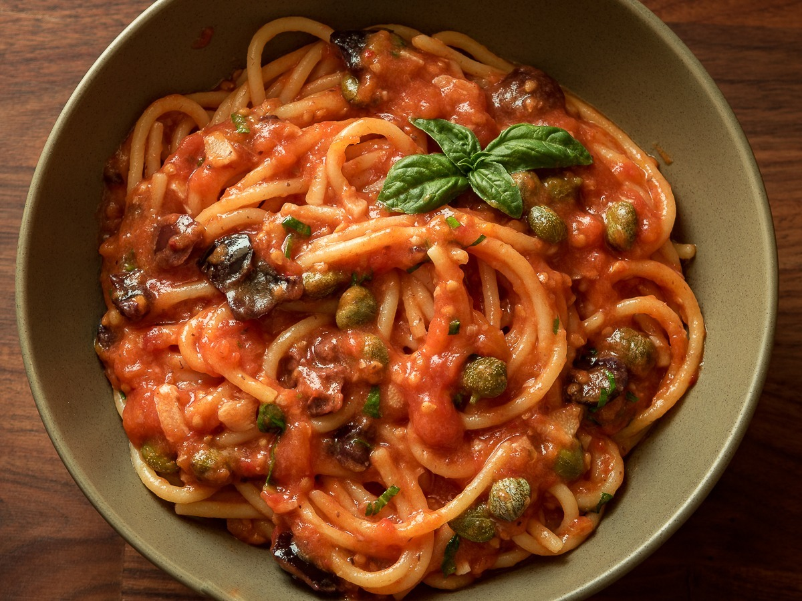

Spaghetti alla puttanesca
Introduzione e contesto
E' una storia lunga... anzi lunghissima

Ingredienti
| Ingrediente | Quantità | Unità | Note |
|---|---|---|---|
| Spaghetti o vermicelli | |||
| aglio | 2 | spicchi | |
| peperoncini secchi piccanti | 2 | ||
| olive di Gaeta | |||
| capperi | |||
| alici | opzionale | ||
| olio | qb | ||
| pelati | 1/2 | kg | interi Cirio |
| prezzemolo |
Preparazione
Fare saltare in un tegame l'aglio, il peperoncino , le olive, i capperi, quindi aggiungere i pelati schiacciati, eventualmente aggiungere alcune alici salate disliscate e lavate.

Fare cuocere fino a scioglimento completo dei pomodori.

Scolare la pasta al dente, spadellare e spruzzare di prezzemolo. Fare cuocere fino a scioglimento completo dei pomodori. Scolare la pasta al dente, spadellare e spruzzare di prezzemolo. Fare cuocere fino a scioglimento completo dei pomodori. Scolare la pasta al dente, spadellare e spruzzare di prezzemolo. Fare cuocere fino a scioglimento completo dei pomodori. Scolare la pasta al dente, spadellare e spruzzare di prezzemolo. Fare cuocere fino a scioglimento completo dei pomodori. Scolare la pasta al dente, spadellare e spruzzare di prezzemolo. Fare cuocere fino a scioglimento completo dei pomodori. Scolare la pasta al dente, spadellare e spruzzare di prezzemolo. Fare cuocere fino a scioglimento completo dei pomodori. Scolare la pasta al dente, spadellare e spruzzare di prezzemolo. Fare cuocere fino a scioglimento completo dei pomodori. Scolare la pasta al dente, spadellare e spruzzare di prezzemolo. Fare cuocere fino a scioglimento completo dei pomodori. Scolare la pasta al dente, spadellare e spruzzare di prezzemolo.